전기공사기사 (2014-09-20 기출문제)
1과목: 전기응용 및 공사재료
1. 전동기의 정격(rate)에 해당되지 않는 것은?
- 연속 정격
- 단시간 정격
- 중시간 정격
- 반복 정격
(정답률: 83%)

2. 전열 방식의 종류 중 전자의 충돌에 의한 가열 방식은?
- 아크 가열
- 레이저 가열
- 유도 가열
- 전자빔 가열
(정답률: 74%)
3. 도통상태(ON 상태)에 있는 SCR을 차단상태(turn off) 상태로 하기위한 적당한 방법은?
- 게이트 전류를 차단시킨다.
- 양극(애노드) 전압을 음으로 한다.
- 게이트에 역방향 바이어스를 인가시킨다.
- 양극전압을 더 높게 가한다.
(정답률: 64%)
4. 유전체 자신을 발열시키는 유전 가열의 특징으로 틀린 것은?
- 열이 유전체 손에 의하여 피가열물 자체 내에서 발생한다.
- 온도상승 속도가 빠르고 속도가 임의 제어된다.
- 내부발열의 방식인 경우 표면이 과열될 우려가 없다.
- 전 효율이 좋고, 설비비가 저렴하다.
(정답률: 62%)
5. 유도 전동기의 제동법이 아닌 것은?
- 발전 제동
- 회생 제동
- 역전 제동
- 역상 제동
(정답률: 74%)
6. 가공 전차선 지지물 중 강재를 한 개 또는 두 개를 합쳐서 전주의 한쪽으로만 지지하여 설치한 것은 무엇인가?
- 고정 브래킷
- 고정 빔(Beam)
- 스팬선 빔(Beam)
- 귀 선로
(정답률: 69%)
7. 다음 온도계의 동작 원리 중 제벡 효과를 이용한 온도계는?
- 저항 온도계
- 방사 온도계
- 열전 온도계
- 광 고온계
(정답률: 83%)
8. 방사에 의한 열의 발산에 사용되는 단위가 잘못된 것은?
- 방사속 : [W]
- 방사세기 : [W/m3]
- 방사밀도 : [W/m2]
- 방사조도 : [W/m2]
(정답률: 65%)
9. 납축전지의 방전 및 충전 시 화학 반응식으로 옳은 것은?
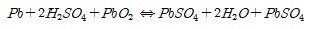
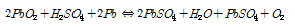
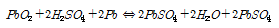
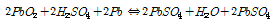
(정답률: 75%)
10. 20[Ω]의 저항체에 5[A]의 전류를 1시간동안 흘렸을 때 발생되는 총 열량[kcal]은 얼마인가?
- 90
- 432
- 1800
- 6000
(정답률: 67%)
11. 내선 규정에 의한 일반적인 접지 공사의 접지선의 색깔은?(관련 규정 개정전 문제로 여기서는 기존 정답인 3번을 누르면 정답 처리됩니다. 자세한 내용은 해설을 참고하세요.)
- 적색
- 청색
- 녹색
- 흑색
(정답률: 69%)
12. 접지공사 시 접지저항을 감소시키기 위하여 사용되는 저감제는?
- 백필(흑연 분말과 코크스 분말의 혼합물)
- 동판 및 동봉
- 가열 왁스
- 아스팔트 마스틱
(정답률: 74%)
13. 가공 배전선로 경완금에 현수애자를 장치할 때 사용하는 것으로 이 자재를 사용하면 앵커쇄클과 볼크레비스를 사용하지 않아도 되는 것은?
- 볼 쇄클
- 소켓아이
- 데드엔드 클램프
- 각암타이
(정답률: 66%)
14. 케이블의 약호 중 EE의 품명은?
- 미네랄 인슈레이션 케이블
- 폴리에틸렌 절연 비닐 시스 케이블
- 형광 방전등용 비닐 전선
- 폴리에틸렌 절연 폴리에틸렌 시스 케이블
(정답률: 82%)
15. 주상 변압기를 전주에 설치하기 위하여 사용하는 금구류는?
- 행거 밴드
- 지선 밴드
- 볼 아이
- 인류 스트랍
(정답률: 77%)
16. 변압기 철심으로 사용하는 전력용 규소강판의 두께는?
- 약 0.15mm
- 약 0.35mm
- 약 0.55mm
- 약 0.75mm
(정답률: 68%)
17. 고율 방전형 연축전지로 단시간 대전류 부하(디젤, 가스터빈, 엔진시동, 엘리베이터 비상조작)용은?
- PS형
- HS형
- AM형
- AL형
(정답률: 66%)
18. 수변전설비의 인입구 개폐기로 사용되며 부하전류를 개폐할 수 있으나 고장전류를 차단할 수 없으므로 한류 퓨즈와 직렬로 사용되는 것은?
- 자동고장 구분 개폐기
- 선로 개폐기
- 기중부하 개폐기
- 부하 개폐기
(정답률: 64%)
19. 옥외의 빗물의 침입을 막는데 사용하며 금속관 공사의 인입구 관 끝에 사용하는 재료는?
- 링리듀서
- 서비스 엘보우
- 강제부싱
- 엔트런스 캡
(정답률: 83%)
20. 등기구 용량 앞에 특별히 표시할 경우에는 각각의 기호를 표시한다. 다음 중 등기구 종류별 기호가 옳은 것은?
- 형광등 : F
- 수은등 : N
- 나트륨등 : T
- 메탈 핼라이드 등 : H
(정답률: 88%)
2과목: 전력공학
21. 3상 3선식 송전선로를 연가 하는 주된 목적은?
- 전압 강하를 방지하기 위하여
- 송전선을 절약하기 위하여
- 고도를 표시하기 위하여
- 선로 정수를 평형시키기 위하여
(정답률: 29%)
22. 과도 안정도 향상 대책이 아닌 것은?
- 속응 여자시스템 사용
- 빠른 고장 제거
- 큰 임피던스의 변압기 사용
- 송전선로에 직렬 커패시터 사용
(정답률: 19%)
23. 발열량 5000 kcal/kg의 석탄을 사용하고 있는 화력발전소가 있다. 이 발전소의 종합 효율이 30%라면, 30억 kWh를 발생하는데 필요한 석탄량은 몇 톤인가?
- 300000
- 500000
- 860000
- 1720000
(정답률: 22%)
24. 전력 계통의 중성점 다중 접지방식의 특성으로 옳은 것은?
- 통신선의 유도장해가 적다.
- 합성 접지 저항이 매우 높다.
- 건전상의 전위 상승이 매우 높다.
- 지락 보호 계전기의 동작이 확실하다.
(정답률: 21%)
25. 4단자 정수가 A, B, C, D인 선로에 임피던스가 ZT인 변압기를 수전단 측에 접속한 계통의 일반 회로정수를 A0, B0, C0, D0라 할 때 D0는 ?
- D+CZT
- D+AZT
- D+BZT
- D
(정답률: 21%)
26. 전력 퓨즈에 대한 설명 중 틀린 것은?
- 차단용량이 크다.
- 보수가 간단하다.
- 정전용량이 크다.
- 가격이 저렴하다.
(정답률: 24%)
27. 3상 결선 변압기의 단상 운전에 의한 소손 방지 목적으로 설치하는 계전기는?
- 차동 계전기
- 역상 계전기
- 과전류 계전기
- 단락 계전기
(정답률: 19%)
28. 3상 1회선과 대지간의 충전전류가 0.3 A/km 일때, 길이가 35km인 선로의 충전전류는 몇 A인가?
- 6.1
- 10.5
- 14.9
- 18.2
(정답률: 25%)
29. 3상 3선식 3각형 배치의 송전선로가 있다. 선로가 연가되어 각 선간의 정전용량은 0.008㎌㎞, 각 선의 대지 정전용량은 0.003㎌/㎞라고 하면 1선의 작용정전용량은 몇 ㎌/㎞ 인가?
- 0.003
- 0.008
- 0.027
- 0.⑤4
(정답률: 26%)
30. 부하 역률이 cosθ인 경우의 배전선로의 전력손실은 같은 크기의 부하전력으로 역률이 1인 경우의 전력손실에 비하여 몇 배인가?
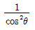
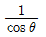
- cosθ
- cos2θ
(정답률: 26%)
31. 동일 축상에 노즐과 동날개를 번갈아 배치하여 각 노즐에서 전압력을 조금씩 단계적으로 강하시키도록 한 터빈의 형식은?
- 반동 터빈
- 단식 충동 터빈
- 속도 복식 충동 터빈
- 압력 복식 충동 터빈
(정답률: 23%)
32. 피뢰기의 구조는 어떻게 구성되는가?
- 특성요소와 소호리액터
- 특성요소와 콘덴서
- 소호리액터와 콘덴서
- 특성요소와 직렬갭
(정답률: 30%)
33. 동기 조상기에 대한 설명 중 옳은 것은?
- 무부하로 운전되는 동기발전기로 역률을 개선한다.
- 무부하로 운전되는 동기전동기로 역률을 개선한다.
- 전부하로 운전되는 동기발전기로 위상을 조정한다.
- 전부하로 운전되는 동기전동기로 위상을 조정한다.
(정답률: 21%)
34. 다음 중 부하전류의 차단 능력이 없는 전력 개폐 장치는?
- 단로기
- 가스 차단기
- 유입 개폐기
- 진공 차단기
(정답률: 27%)
35. 피뢰기의 충격방전 개시전압은 무엇으로 표시하는가?
- 직류전압의 크기
- 충격파의 평균치
- 충격파의 최대치
- 충격파의 실효치
(정답률: 27%)
36. 고압의 차폐케이블에 지기가 발생할 때, 자동적으로 전로를 차단하기 위하여 지락 차단장치에 케이블 관통형 영상 변류기를 설치할 때 옳은 방법은?
- 부하측에 설치할 때 차폐 케이블의 접지선과 일괄하여 관통할 것
- 전원측에 설치할 때 차폐 케이블의 접지선과 일괄하여 관통할 것
- 전원측에 설치할 때 차폐 케이블의 접지선을 제외하고 관통할 것
- 부하측에 설치할 때 차폐선과 접지선은 생략할 것
(정답률: 19%)
37. 같은 재질, 같은 굵기의 가공선과 지중선의 인덕턴스와 커패시턴스를 비교할 때 올바른 것은?
- 가공선은 지중선보다 인덕턴스는 크고, 커패시턴스는 작다.
- 가공선은 지중선보다 인덕턴스는 작고, 커패시턴스는 크다.
- 가공선은 지중선보다 인덕턴스와 커패시턴스가 모두 크다.
- 가공선은 지중선보다 인덕턴스와 커패시턴스가 모두 적다.
(정답률: 23%)
38. 송전단 전압 161kV, 수전단 전압 155kV, 전력상차각 30°, 리액턴스 50Ω일 때 송전전력은 약 몇 MW인가?
- 210
- 250
- 370
- 430
(정답률: 23%)
39. 가공송전선의 코로나 임계전압에 영향을 미치는 여러 가지 인자에 대한 설명 중 틀린 것은?
- 전선표면이 매끈할수록 임계전압이 낮아진다.
- 날씨가 흐릴수록 임계전압은 낮아진다.
- 기압이 낮을수록, 온도가 높을수록 임계전압은 낮아진다.
- 전선의 반지름이 클수록 임계전압은 높아진다.
(정답률: 21%)
40. 다음 중 환상(루프)방식과 비교할 때 방사상 배전선로 구성 방식에 해당되는 사항은?
- 전력 수요 증가 시 간선이나 분기선을 연장하여 쉽게 공급이 가능하다.
- 전압 변동 및 전력 손실이 작다.
- 사고 발생 시 다른 간선으로의 전환이 쉽다.
- 환상방식보다 신뢰도가 높은 방식이다.
(정답률: 19%)
3과목: 전기기기
41. 직류기의 전기자 권선법으로 주로 사용되는 것은?
- 폐로권, 환상권, 이층권
- 폐로권, 고상권, 이층권
- 개로권, 환상권, 단층권
- 개로권, 고상권, 이층권
(정답률: 26%)
42. 다음 정류기 중에서 전압 맥동률이 가장 작은 정류기는?
- 단상 반파 정류기
- 단상 전파 정류기
- 3상 반파 정류기
- 3상 전파 정류기
(정답률: 24%)
43. 유도전동기에서 역률이 나빠진 경우는?
- 2차 여자기의 전압을 회전자의 전압보다 위상을 90°앞서게 공급한 경우
- 동일한 용량의 기계라도 극수가 증가한 경우
- 무부하일 때보다 정격부하인 경우
- 같은 극수라도 권선형보다 농형인 경우
(정답률: 13%)
44. 동기 발전기의 자기여자작용은 부하전류의 위상이 다음 중 어느 때 일어나는가?
- 역률이 1일때
- 지상역률일 때
- 진상역률일 때
- 역률과 무관하다.
(정답률: 17%)
45. 손실 중 변압기의 온도상승에 관계가 가장 적은 요소는?
- 철손
- 동손
- 유전체손
- 와류손
(정답률: 19%)
46. 3상 유도전동기에서 동기와트로 표시되는 것은?
- 각속도
- 토크
- 2차 출력
- 1차 입력
(정답률: 19%)
47. 단상 변압기에서 전부하시 2차 단자전압이 115V이고, 전압 변동률이 2[%]이다. 1차 공급전압[V]은 얼마인가? (단, 권선비는 20:1이다.)
- 2346
- 2356
- 2366
- 2376
(정답률: 25%)
48. 직류 분권 전동기의 전압이 일정할 때 부하 토크가 2배로 증가하면 부하전류는 약 몇 배인가?
- 4
- 3
- 2
- 1
(정답률: 23%)
49. m부하 운전시 변압기의 최대효율 운전조건에 해당되지 않는 것은? (단, Pi는 철손, Pc는 동손이다.)
- 철손=동손
- Pi=m2Pc
- 전손실은 Pi-m2Pc가 된다.
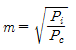
(정답률: 23%)
50. Y결선한 변압기의 2차측에 사이리스터 6개로 결선 3상 전파정류회로를 구성했을 때, 직류 평균 전압은? (단, E는 교류측 상전압 α는 점호제어각이다.)
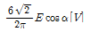
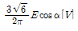
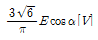
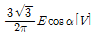
(정답률: 15%)
51. 동기 전동기의 공급전압, 주파수 및 부하를 일정하게 하고 여자전류를 변화시키면?
- 속도가 증가한다.
- 전기자 전류가 변한다.
- 토크가 변한다.
- 속도가 감소한다.
(정답률: 18%)
52. 제어용 기기에 요구되는 일반적인 조건에 해당되지 않는 것은?
- 기동, 정지, 정역회전을 자유로이 할 수 있을 것
- 기동시에 전류와 토크를 조정할 수 있을 것
- 회전속도 및 토크를 조정할 수 있을 것
- 경부하를 방지할 수 있을 것
(정답률: 23%)
53. 2대의 발전기가 병렬운전되고 있을 때, B기의 원동기의 조속기를 조정하여 B기의 입력을 증가시키면 B기에는?
- 90° 진상전류가 흐른다.
- 90° 지상전류가 흐른다.
- 부하 전류가 증가한다.
- 부하 전류가 감소한다.
(정답률: 10%)
54. 단상반파 정류 회로에서 교류측 공급전압 690sinwt[V], 직류측 부하저항 10Ω일 때 직류측 전압과 전류는?
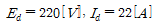
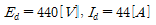
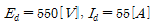
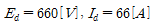
(정답률: 21%)
55. 변압기 내부의 %저항강하와 %리액턴스 강하가 각각 1.5%, 4%일 때 부하역률 80%(뒤짐)에서의 전압 변동률[%]은?
- 1.2
- 1.5
- 2.3
- 3.6
(정답률: 20%)
56. 단상 유도전동기의 기동법이 아닌 것은?
- 분상 기동
- Y-△ 기동
- 콘덴서 기동
- 반발 기동
(정답률: 28%)
57. 3상 유도전동기에서 2차측 저항을 2배로 하면 그 최대 토크는 어떻게 변하는가?
- 3배로 커진다.
- √2배로 커진다.
- 2배로 커진다.
- 변하지 않는다.
(정답률: 25%)
58. 정류자와 브러시와의 접촉 저항과 전류와의 관계를 나타내는 그래프는?
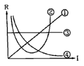
- ①
- ②
- ③
- ④
(정답률: 25%)
59. 단상 유도전동기의 기동에 브러시를 필요로 하는 것은?
- 분상 기동형
- 반발 기동형
- 콘덴서 분상 기동형
- 세이딩 코일 기동형
(정답률: 21%)
60. 100V를 120V로 승압하는 단권변압기의 자기용량[kVA]은? (단, 부하용량은 6kVA 이다. )
- 1
- 3.3
- 5
- 10
(정답률: 15%)
4과목: 회로이론 및 제어공학
61. 그림과 같은 3상 Y결선 불평형 회로가 있다. 전원은 3상 평형전압 E1, E2, E3이고 부하는 일 때 전원의 중성점과 부하의 중성점간의 전위차를 나타내는 식은?
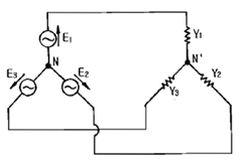
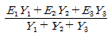
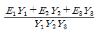
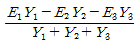
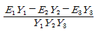
(정답률: 22%)
62. 비정현파 전압과 전류가 다음과 같을 때 이 정현파의 전력은 몇 W인가?
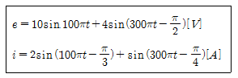
- 24.212
- 12.828
- 8.586
- 6.414
(정답률: 15%)
63. 구동함수로 나타낸 임피던스를 부분분수로 전개할 때 K0, K1, K2의 값은?
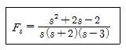
- 0, -2, 3
- -2, 6, 3
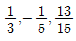
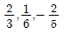
(정답률: 19%)
64. 그림과 같은 회로에서 C=100㎌의 콘덴서에 Q0=3×10-2[C]의 전하량이 축적되어 있다. t=0인 순간에 K를 닫은 후 저항 R=5Ω에서 소비되는 총 전력량 [J]은?
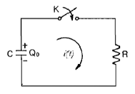
- 4.5×102
- 1.8×104
- 1.8
- 4.5
(정답률: 9%)
65. 그림의 2단자 회로에서 L=100mH, C=10㎌일 때 주파수에 무관한 정저항 회로가 되려면 저항 R의 크기[Ω]는?
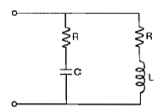
- 100
- 147
- 236
- 10000
(정답률: 21%)
66. 저항 20Ω, 인덕턴스 0.1H인 직렬회로에 60Hz, 110V의 교류 전압이 인가되어 있다. 인덕턴스에 축적되는 자기에너지의 평균값은 약 몇 J인가?
- 0.14
- 0.33
- 0.75
- 1.45
(정답률: 15%)
67. 저항 0.5Ω/km, 인덕턴스가 1μH/㎞, 정전용량 6㎌/㎞ 길이 10km인 송전선로에서 무왜형 선로가 되기 위한 컨덕턴스는?
- 1 ℧/㎞
- 2 ℧/㎞
- 3 ℧/㎞
- 4 ℧/㎞
(정답률: 24%)
68. 코일에 e=211sinwt[V]인 교류전압이 가해졌을 때 오실로스코프에 의하여 전류의 최대값이 10A임을 알 수 있었다. 만일 코일의 내부저항이 10Ω임이 알려져 있었다면 코일의 인덕턴스는 약 몇 mH인가? (단, 주파수는 60Hz이다.)
- 39
- 49
- 59
- 69
(정답률: 14%)
69. RLC 직렬회로에서 부족제동인 경우 감쇠진동의 고유 주파수 f는?
- 공진주파수보다 크다.
- 공진주파수보다 작다.
- 공진주파수에 관계없이 일정하다.
- 공진주파수와 같다.
(정답률: 20%)
70. 대칭 3상 전압이 a상 Va, b상 Vb=a2Va, Vc=aVa일 때 a상을 기준으로 한 대칭분 전압 중 정상분 V1[V]은 어떻게 표시되는가?
- 1/3Va
- Va
- aVa
- a2Va
(정답률: 20%)
71. Nyquist 경로에 포위되는 영역에 특성방정식의 근이 존재하지 않으면 제어계의 상태는?
- 안정
- 불안정
- 진동
- 발산
(정답률: 16%)
72. 개루프 전달함수
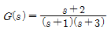
인 부궤환 제어계의 특성방정식은?- s2+3s+2=0
- s2+4s+3=0
- s2+4s+6=0
- s2+5s+5=0
(정답률: 16%)
73.
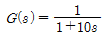
인 1차 지연요소의 G[dB]는? (단, w=0.1[rad/sec]이다.)- 약 3
- 약 -3
- 약 5
- 약 -5
(정답률: 14%)
74. 논리식
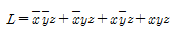
를 간략화한 식은?- z
- xz
- yz
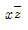
(정답률: 27%)
75. 전달함수가
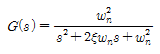
으로 표시되는 2차계에서 wn=1, ξ=1인 경우의 단위 임펄스 응답은?- e-t
- te-t
- 1-te-t
- 1-e-t
(정답률: 15%)
76.
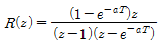
의 역변환은?- 1-e-aT
- 1+e-aT
- te-aT
- teaT
(정답률: 16%)
77. 특성방정식
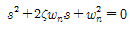
에서 감쇠진동을 하는 제동비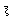
의 값은?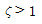
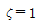
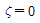
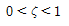
(정답률: 22%)
78. 그림과 같은 회로망은 어떤 보상기로 사용될 수 있는가? (단, 1
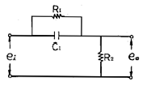
- 지연 보상기
- 진지상 보상기
- 진상 보상기
- 지상 보상기
(정답률: 23%)
79. 그림과 같은 피드백 회로의 전달함수는?
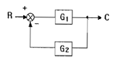
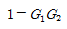
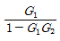
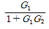
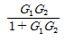
(정답률: 26%)
80. 온도, 유량, 압력 등 공정제어의 제어량으로 하는 제어는?
- 프로세스 제어
- 자동 조정
- 서보기구
- 정치제어
(정답률: 21%)
5과목: 전기설비기술기준 및 판단기준
81. 옥내에 시설하는 저압용 배선기구의 시설에 관한 설명 중 잘못된 것은?
- 옥내에 시설하는 저압용 배선기구의 충전 부분은 노출되지 않도록 시설한다.
- 옥내에 시설하는 저압용 비포장 퓨즈는 불연성으로 제작한 함 내부에 시설하여야 한다.
- 욕실 등 인체가 물에 젖어있는 상태에서 물을 사용하는 장소에서는 인체강전 보호용 누전차단기가 부착된 콘센트를 시설하여야 한다.
- 옥내에서 시설하는 저압용의 배선기구에 전선을 접속하는 경우에는 나사로 고정해서는 안된다.
(정답률: 25%)
82. 다음 중 특고압의 전선로로 시설하여서는 안되는 것은?
- 터널 안 전선로
- 지중 전선로
- 물밑 전선로
- 옥상 전선로
(정답률: 22%)
83. 저압 옥내배선의 사용전선으로 단면적이 1mm2 이상인 케이블을 사용한다면 어떤 종류의 케이블을 사용하여야 하는가?(관련 규정 개정전 문제로 여기서는 기존 정답인 2번을 누르면 정답 처리됩니다. 자세한 내용은 해설을 참고하세요.)
- EV 케이블
- 미네럴인슈레이션 케이블
- 캡타이어 케이블
- BE 케이블
(정답률: 27%)
84. 사용전압이 400V 미만인 저압 가공전선은 케이블인 경우를 제외하고 절연전선인 경우 인장강도 2.3kN 이상의 것 또는 지름 몇 mm 이상의 경동선 이어야 하는가?
- 2.6
- 3.2
- 4.0
- 6.0
(정답률: 18%)
85. 3상 4선식 22.9kV 중성점 다중접지 전로의 절연내력 시험 전압은 최대사용전압의 몇 배의 전압인가?
- 0.64
- 0.72
- 0.92
- 1.25
(정답률: 25%)
86. 옥내의 네온방전등 공사에서 관등회로의 배선을 애자사용 공사에 의하여 시설할 때 그 기술기준으로 틀린 것은?
- 전선은 네온 전선일 것
- 전선의 지지점간의 거리는 1.5m 이하일 것
- 전선 상호간의 간격은 6cm 이상일 것
- 전선과 조영재 사이의 이격거리는 점검할 수 있는 은폐장소에서 6cm 이상일 것
(정답률: 16%)
87. 사용전압이 15kV 이하인 특고압 가공전선로의 중성선 다중접지 및 중성선 시설 시 각 접지선을 중성선으로부터 분리하였을 경우 매 1km마다 중성선과 대지사이의 합성 전기 저항값은 몇 Ω 이하이어야 하는가?
- 15
- 20
- 25
- 30
(정답률: 13%)
88. 가공직류 전차선의 궤조면상의 높이는 특별한 경우를 제외하고 일반적인 경우 몇 m 이상이어야 하는가?(오류 신고가 접수된 문제입니다. 반드시 정답과 해설을 확인하시기 바랍니다.)
- 4.4
- 4.8
- 5.2
- 5.8
(정답률: 22%)
89. 가공전선로의 지지물에 지선을 사용하여 안전율을 2.5로 한 경우 허용 인장하중은 최저 몇 kN 으로 하는가?
- 2.11
- 2.91
- 4.31
- 5.81
(정답률: 27%)
90. 버스덕트 공사에 의한 저압 옥내 배선의 방법으로 잘못된 것은?(오류 신고가 접수된 문제입니다. 반드시 정답과 해설을 확인하시기 바랍니다.)
- 덕트의 끝 부분은 막는다.
- 사용전압이 400V 미만인 경우 덕트에 제 3종 접지공사를 한다.
- 사용전압이 400V 이상인 경우 덕트에 제 2종 접지 공사를한다.
- 덕트를 조영재에 따라 붙이는 경우 덕트의 지지점간 거리는 3m 이하로 한다.
(정답률: 26%)
91. 사용전압 154kV의 특고압 가공전선로를 시가지에 시설하는 경우 지표상 몇 m 이상에 시설하여야 하는가?
- 7
- 8
- 9.44
- 11.44
(정답률: 21%)
92. 옥내에 시설하는 사용전압이 400V 미만인 이동전선은 고무코드 또는 0.6/1 kV EP 고무절연 클로르프렌 캡타이어 케이블로서 단면적은 몇 mm2 이상이어야 하는가?
- 0.5
- 0.75
- 1.0
- 1.5
(정답률: 25%)
93. 지중 전선로를 직접 매설식에 의하여 차량 기타 중량물의 압력을 받을 우려가 있는 장소에 시설하는 경우 매설 깊이는 몇 m 이상으로 하여야 하는가?(2021년 변경된 KEC 규정 적용)
- 1.0
- 1.2
- 1.5
- 2.0
(정답률: 25%)
94. 가공전선로에 사용하는 지지물의 강도 계산에 적용하는 풍압하중 중병종 풍압하중은 갑종 풍압 하중에 대한 얼마를 기초로 하여 계산한 것인가?
- 1/2
- 1/3
- 2/3
- 1/4
(정답률: 23%)
95. 과전류 차단기로 저압전로에 사용하는 정격전류 30A인 퓨즈를 수평으로 붙인 경우 정격전류의 2배의 전류를 통하였을 때 몇 분안에 용단되어야 하는가?(오류 신고가 접수된 문제입니다. 반드시 정답과 해설을 확인하시기 바랍니다.)
- 2
- 4
- 6
- 8
(정답률: 24%)
96. 380V 전로에 사용하는 전동기 금속제 외함의 접지 공사는?(오류 신고가 접수된 문제입니다. 반드시 정답과 해설을 확인하시기 바랍니다.)
- 제 1종 접지 공사
- 제 2종 접지 공사
- 제 3종 접지 공사
- 특별 제 3종 접지 공사
(정답률: 23%)
97. 가공전선로의 지지물에 시설하는 통신선 또는 이에 직접 접속하는 가공 통신선이 철도를 횡단하는 경우에는 레일면상 몇 m 이상으로 설치하여야 하는가?
- 4.5
- 5.5
- 6.5
- 7.5
(정답률: 28%)
98. 전선의 단면적이 55mm2인 경동연선을 사용하고 지지물로 철탑을 사용하는 경우 제 3종 특고압 보안공사에 의하여 시설하는 철탑 경간의 한도는 몇 m인가?
- 300
- 400
- 500
- 600
(정답률: 16%)
99. 수소냉각식 발전기에서 수소의 순도가 몇 % 이하로 저하한 경우에 이를 경보하는 장치를 시설하여야 하는가?
- 75
- 80
- 85
- 90
(정답률: 27%)
100. 특고압 전선로에 접속하는 배전용 변압기를 시설하는 경우이다. 변압기의 특고압측에는 일반적인 경우 개폐기와 또한 어떤 것을 시설하여야 하는가?
- 과전류 차단기
- 방전기
- 계기용 변류기
- 계기용 변압기
(정답률: 27%)